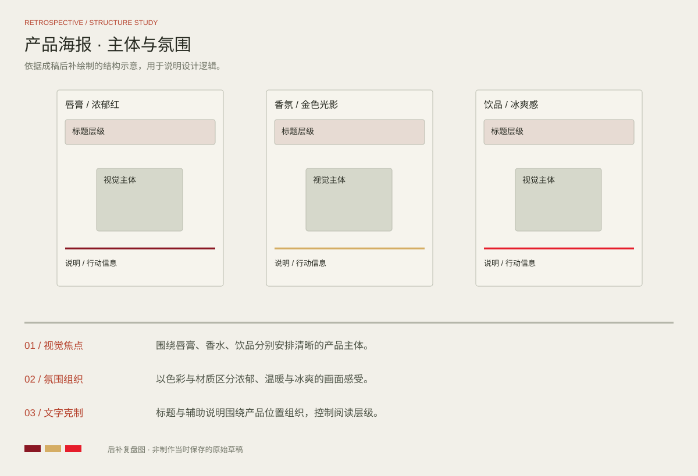

PROJECT 05 / PRODUCT POSTERS
让产品，成为焦点
美妆 · 香氛 · 饮品海报
三张产品主题海报，分别以红色膏体、金色光影与冰爽气泡组织画面，围绕产品轮廓、材质和氛围建立视觉焦点。
完整设计 / FULL PROJECT点击图片放大查看
DESIGN REVIEW / STRUCTURE STUDY
方案复盘与版式推演
基于当前成稿后补绘制的结构示意，用于解释信息层级、构图与视觉延展；此图为方案复盘，不代表制作当时保存的原始草稿。

视觉焦点
围绕唇膏、香水、饮品分别安排清晰的产品主体。
氛围组织
以色彩与材质区分浓郁、温暖与冰爽的画面感受。
文字克制
标题与辅助说明围绕产品位置组织，控制阅读层级。